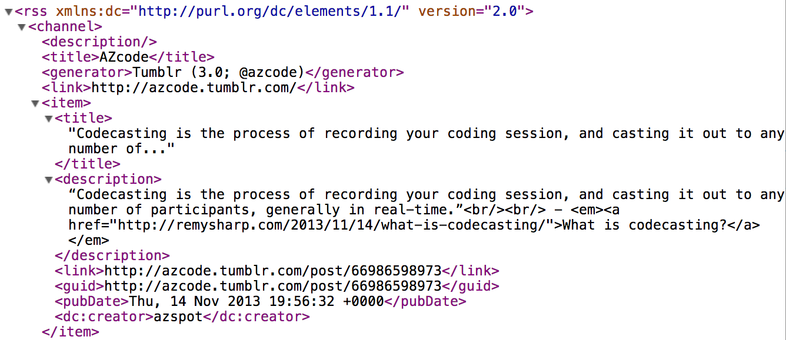

A structured “view” of a site, with a set of standard “field” tags.

Without RSS readers, the long tail would be cut off. The rich would get richer: only the big-name sites get regular readership without RSS, so the smaller sites would only get scraps of occasional Twitter links from the few people who remember to check them regularly, and that number would dwindle.
Granted, this problem is mostly concentrated in the tech world where RSS readers really took off. But the tech world is huge, and it’s the world we’re in.
In a world where RSS readers are “dead”, it would be much harder for new sites to develop and maintain an audience, and it would be much harder for readers and writers to follow a diverse pool of ideas and source material. Both sides would do themselves a great disservice by promoting, accelerating, or glorifying the death of RSS readers.
I enjoy reading RSS on Google Reader. It has totally supplanted the time I used to allot to “reading the newspaper”. I know I’ve shared this before, but I keep pace with 2,600 subscriptions. No, I certainly do not read every item and probably only click through less than 10-20% of items. Not true for all sites, as the frequently updated sites get clicked at a 2-3% rate whereas treasured, infrequently updated sites have all their items read. But I don’t fret over unread items and even if I miss reading for a day or two, I feel no obligation to “catch up”, and instead, if I want to review items of interest I may have missed, I use the “Search” feature.
Outline Processor Markup Language
A collection of feeds that you can import/export into other tools
</end>